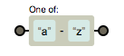

1. 什么是正则表达式
正则表达式（Regular Expression）是用单个字符串来描述、匹配一系列和某个句法规则的字符串。
简单来说，就是按照某种规则去匹配符合条件的字符串。
2. 一个可视化的工具
推荐一个很好用的可视化网站：https://regexper.com/
偶尔会有被墙打不开的情况，可以从 github 上把源码下载下来在本地运行： https://github.com/javallone/regexper-static
可以把正则表达式通过图形的方式进行表示，比代码直观了很多。
例如： \d+
对于复杂一些的情况，可视化工具更能突显它的优势，比如：http:(\/\/.+\.jpg)
3. 实例化正则表达式
3.1 字面量
1 | var reg = /\bis\b/g; |
3.2 构造函数
语法：
new RegExp(pattern, attributes);
- pattern: 字符串，正则表达式的模式或其他正则表达式
- attributes: 字符串(可选)，修饰符 “g”、”i” 和 “m”。特别需要注意的是，如果 pattern 是正则表达式，而不是字符串，则必须省略该参数！
举个栗子：
1 | var reg = new RegExp('\\bis\\b', 'g'); |
4. 修饰符
- g: global 全局搜索，如果不添加该修饰符，则搜索到第一个匹配字符则停止
- i: ignore case 忽略大小写，默认大小写敏感
- m: multiple lines 多行搜索
4.1 全局搜索 g
1 | 'Hello world! Hello RegExp!'.replace(/Hello/, 'x') |
4.2 忽略大小写 i
1 | 'Hello World! hello world!'.replace(/hello\b/g, 'x') |
4.3 多行搜索 m
1 | "@123 |
5. 元字符
正则表达式由两种基本字符类型组成：
- 原义文本字符：表示本意的字符
- 元字符：在正则表达式中有特殊含义的非字母字符，包括：
*、+、?、$、^、.、|、\、()、{}、[]
| 字符 | 含义 |
|---|---|
| \t | 水平制表符 |
| \v | 垂直制表符 |
| \n | 换行符 |
| \r | 回车符 |
| \0 | 空字符 |
| \f | 换页符 |
| \cX | 与X对应的控制字符(Ctrl+X) |
5.1 字符类 []
一般情况下正则表达式的一个字符对应字符串的一个字符。
例如 ab\t的含义是：
在很多情况下，我们希望符合某些特征的一类字符，而不是特指某个字符。
我们可以使用元字符 [] 来构建一个简单的类。
[abc] 表示字符 a 或 b 或 c 归为一类，表达式表示匹配这类中的某个字符即可，即“或“的概念。
1 | "a1b2c3d4".replace(/[abc]/g, 'X') |
5.2 反向类 ^
反向类的意思是不属于某类的内容。
[^abc] 表示不是字符 a 或 b 或 c.
1 | "a1b2c3d4".replace(/[^abc]/g, 'X') |
5.3 范围类 -
如果我们使用上面的方法匹配数字，只能写成 [0123456789]，对于字母，只能通过枚举 26 个字母表示一类。
正则表达式提供了范围类，可以用 [a-z] 来表示 a 到 z 的任意字符。

在 [] 组成的类内部可以连写，例如 [a-zA-Z] 表示所有大小写字母
注：’-‘ 只有在两个字符或字母中间时才表示为范围。
1 | '2016-09-12'.replace(/[0-9-]/g, 'A') |
5.4 预定义类
| 字符 | 等价类 | 含义 |
|---|---|---|
| . | [^\r\n］ | 除了回车符和换行符之外的所有字符 |
| \d | [0-9] | 数字字符 |
| \D | [^0-9] | 非数字字符 |
| \s | [\t\n\x0B\f\r] | 空白符 |
| \S | [^\t\n\x0B\f\r] | 非空白符 |
| \w | [a-zA-Z_0-9] | 单词字符（字母、数字下划线） |
| \W | [^a-zA-Z_0-9] | 非单词字符 |
举个例子：ab[0-9][^\r\n] 等价于 ab\d.。
5.5 边界
| 字符 | 含义 |
|---|---|
| ^ | 以xxx开始 |
| $ | 以xxx结束 |
| \b | 单词边界(boundary) |
| \B | 非单词边界 |
例如：
1 | "This is mine".replace(/is/g, '0'); |
1 | '@123@abc@'.replace(/@./g, 'Q') |
注：
- ^ 在字符类（方括号中）表示取反
- ^ 表示”以xxx开头”时必须放在开头，$ 表示”以xxx结束”时放在结尾
5.6 量词
如果我们希望匹配一个连续出现「20次」数字的字符串，用已知的方法只能写成如下形式：
1 | \d\d\d\d\d\d\d\d\d\d\d\d\d\d\d\d\d\d\d\d |
为了便于表示多个相同规则的字符，提出了量词的表示方法：
| 字符 | 含义 | 图形表示 |
|---|---|---|
| ? | 出现零次或一次（最多出现一次） |  |
| + | 出现一次或多次（至少出现一次） | |
| * | 出现零次或多次（任意次） | |
| {n} | 出现n次 | n=3 |
| {n,m} | 出现n到m次 | {3,5} |
| {n,} | 至少出现n次 |
如果想表示最多 10 次，写法为：\d{0,10}
5.6.1 量词的贪婪模式与非贪婪模式
思考一个问题，下面这个正则表达式会匹配出什么呢：1
'12345678'.match(/\d{3,6}/)
正则表达式用来匹配 3-6 个数字字符，字符串既可以匹配 3 个（最少）数字字符，也可以匹配 6 个（最多）字符，那么会执行哪个呢？输出的结果如下：
["123456", index: 0, input: "12345678"]
正则表达式会尽可能多的匹配，即贪婪模式，直到匹配失败！
如果想让正则表达式尽可能少的匹配，即非贪婪模式，只要在量词后加上 ? 即可。
1 | '12345678'.match(/\d{3,6}?/) |
5.7 分组 ()
假设我们希望匹配字符串 Hello 连续出现 3 次，下面的写法并不能实现我们的需求：
Hello{3}
因为它所代表的含义只是匹配字母 o 三次：
如何作用于整个单词呢？这里引入了分组的概念，即用小括号可以实现匹配字符的分组：
(Hello){3}
举个栗子：
1 | 'HelloHelloHello World!'.replace(/(Hello){3}/, 'X') |
5.7.1 或（ | ）
或（｜）配合分组使用，可以获得分组中的多个状态。
1 | 'Hello World!'.replace(/(Hello|World)/g,'X') |
1 | 'Hellorld HelWorld!'.replace(/Hel(lo|Wo)rld/g,'X') |
5.7.2 反向引用（$）
提个需求，如何使用正则表达式实现下面的格式转换：
2015-12-25 => 12/25/2015
反向引用的意义在于可以让我们获得匹配到的字符串，可以捕获到分组的内容！
上面的需求可以用下面的方法实现：
1 | '2015-12-25'.replace(/(\d{4})-(\d{2})-(\d{2})/g, '$2/$3/$1') |
其中，$1, $2, $3 分别代表着第1个、第2个和第3个分组内容，即匹配到的\d{4}，\d{2}和\d{2}。
5.7.3 忽略分组
不希望捕获某些分组，只需要在分组内加上 ?: 即可。
例如：
(?:Hello) (World)
我们发现这里只有 World 成为了一个分组，Hello 并没有成为一个分组。
5.8 前瞻与后顾
正则表达式从文本头部向尾部开始解析，文本尾部方向，称为“前”。前瞻是在正则表达式匹配到规则的时候，向前检查是否符合断言，后顾反之。
JavaScript 不支持后顾！
符合和不符合特定断言称为 肯定／正向 匹配和 否定／负向 匹配。
| 名称 | 正则 | 含义 |
|---|---|---|
| 正向前瞻 | exp(?=assert) | |
| 负向前瞻 | exp(?!assert) | |
| 正向后顾 | exp(?<=assert) | JavaScript 不支持 |
| 负向后顾 | exp(?<!assert) | JavaScript 不支持 |
举个栗子：
\w(?=\d) 表示匹配一个字符(\w)，但是该字符的后面必须是一个数字(\d)。
1 | "a2*3".replace(/\w(?=\d)/g, 'X') |
注：断言是不做匹配的，只是用来做匹配的条件！
\w(?!\d) 表示匹配一个字符(\w)，但是该字符的后面必须不是数字(\d)。
1 | "a2*3".replace(/\w(?!\d)/g, 'X') |
6. 正则表达式对象的属性和方法
6.1 lastIndex 属性
RegExp.lastIndex
该属性存放一个整数，它声明的是上一次匹配文本之后的第一个字符的位置。
上次匹配的结果是由方法 RegExp.exec() 和 RegExp.test() 找到的，它们都以 lastIndex 属性所指的位置作为下次检索的起始点。
这样，就可以通过反复调用这两个方法来遍历一个字符串中的所有匹配文本。
该属性是可读可写的。只要目标字符串的下一次搜索开始，就可以对它进行设置。当方法 exec() 或 test() 再也找不到可以匹配的文本时，它们会自动把 lastIndex 属性重置为 0。
特别需要注意的是，不具有标志 g 和不表示全局模式的 RegExp 对象不能使用 lastIndex 属性。
如果在成功地匹配了某个字符串之后就开始检索另一个新的字符串，需要手动地把这个属性设置为 0。
6.2 test() 方法
用于测试字符串参数中是否存在匹配正则表达式模式的字符串。如果存在返回 true，否则返回 false。
1 | var reg1 = /\w/; |
如果我们加上 g 修饰符，结果会有些不同：
1 | var reg2 = /\w/g; |
好像没什么问题对不对？但当我们多执行几遍，结果就会变为：
1 | reg2.test('ab'); // true |
第三次执行时结果会变成 false，再执行第四次时结果又变为 true。这种与预期不相符的结果是由 lastIndex 属性导致的。
每次 test() 执行后，都会把结果作用于本身
1 | while(reg2.test('ab')){ |
lastIndex 表示当前匹配字符的下一个字符的位置。第一次匹配时，当前匹配字符为 ‘a’，下一个字符为 ‘b’，因此第一次 lastIndex 为 1，第二次匹配时 lastIndex 为 2。由于后面没有字母，第三次匹配时，lastIndex 会重置为 0。
6.3 exec() 方法
使用正则表达式模式对字符串执行搜索，并将更新全局 RegExp 对象的恶属性以反映匹配结果。
如果没有匹配的文本，则返回 null，否则返回一个结果数组。
返回结果类似 string 的 match (非全局) 方法。
返回值：
调用 RegExp 对象 (非全局和全局) 时，均返回数组：[subStr, groupStr_1, groupStr_2, … index, input]
- subStr: 与表达式相匹配的文本
- groupStr_i: 与第 i 个子表达式相匹配的文本
- index: 匹配的字符串第一次出现的位置
- input: 原字符串
1 | var ts = '$1az2bb3cy4dd5ee'; |
对于全局的 RegExp 对象，常用的方法如下：
1 | var ts = '$1az2bb3cy4dd5ee'; |